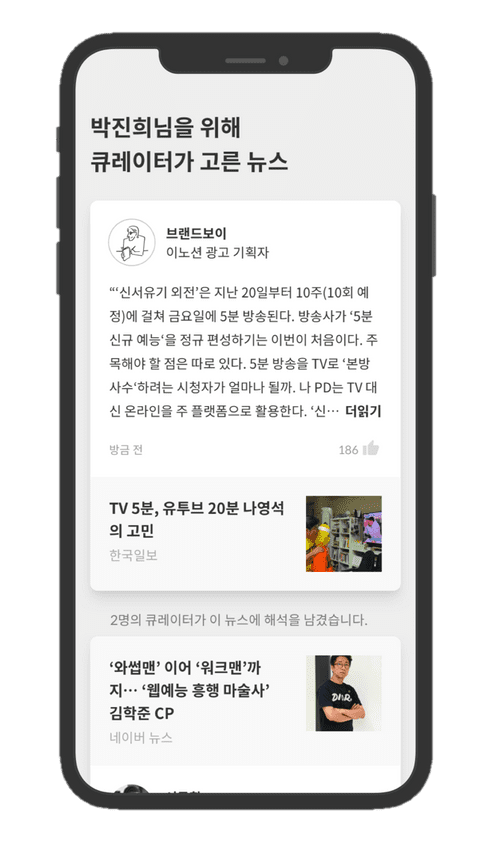

업계 최고의 소프트웨어 엔지니어와 CTO가
선별하고 해석하는 IT 기술 트렌드
잘하는 엔지니어들은 어떻게 일하고 어떤 정보에 주목하는지,
커리어리에서 확인해 보세요.
휴대폰 번호를 입력해 주세요. 문자로 앱 다운로드 링크를 보내드릴게요.
앱 다운로드 링크 보내기
엔지니어 분들에게 물었습니다.
"요즘 어떤 고민하시나요?"
7년 동안 프로그래밍만 해왔는데,
회사에서 갑자기 매니저가 되라고 하네요.
매니저 일을 잘할 수 있을지 모르겠어요.
회사에 필요한 엔지니어링 기술 서치부터 후배 커리어
상담까지, 기존과 전혀 다른 새로운 역량이 필요한데, 지금
당장 무엇부터 공부해야할지 난감해요.
이 커리어로 가는 게 맞는지도 혼란스럽네요.
by 8년차 모바일 게임 엔지니어 박OO 님
창업을 꿈꾸는 엔지니어인데,
기술과 비즈니스 동향 파악이 어려워요.
프로그래밍 정보에만 둘러 쌓이다 보면 시장에 대한 감이
떨어질 수 밖에 없는 것 같아요.
정보는 쏟아지는 데 읽을 시간은 부족하고.. 업계 동향 파악 좀
더 쉽게 할 수 없을까요?
이 커리어로 가는 게 맞는지도 혼란스럽네요.
by 5년차 부동산 앱 소프트웨어 엔지니어 신OO 님
하루 단 5분
으로
업계 탑 엔지니어들의 관점을 얻어가세요.
어떤 콘텐츠를 매일 읽느냐에 따라 1년 뒤 엔지니어로서의 모습이 바뀔거에요.
더 뛰어난 엔지니어로 거듭날 수 있도록 커리어리가 도와드릴게요.
구글, 넷플릭스, 네이버, 우아한형제들, 넥슨 등 탄탄한 경력을
쌓은 CTO와 엔지니어가 본인만의 관점으로 트렌드를 해석해
드려요.
유명 기업에 재직하는 CTO와 소프트웨어 엔지니어들의 해석과 관점을 가져가세요.
"어떻게 성장하지?" 이제 혼자 고민할 필요 없어요.
앞서 간 엔지니어들과 함께 시야를 넓히세요.
기술 트렌드부터 비즈니스와 리더십까지. 유용한 소식을 놓치지 마세요.
커리어 좋은 엔지니어들은 어떻게 성장해 왔는지, 지금은 어떤 정보에 주목하는지 알 수 있어요.
광고 없이 무료로 보세요.
(세상에서 제일 쓸데없는) 연예인 걱정하는 뉴스, 지저분한 광고에서 이제 해방!
중요한 해외 소식들, 나만 계속 놓치고 있나요?
한글로 된 유용한 정보, 찾기 참 어렵죠?
알기 어려운 해외 소식도 쉽게 파악하세요. 지금 가장 중요한 정보를 쉽고 빠르게 전해드려요.
사용자들이 말하는 커리어리
엔지니어들은 비즈니스 소식을 접할 기회가 부족한데
여기서 재밌는 소식들을 자주 접할 수 있어요.
기술뿐만 아니라 시장에 대한 이해가 있어야
개발하는 것도 재밌거든요.
by 광고 솔루션 테크 리드, 백OO 님
리더십과 매니지먼트에 대한 글들이 크게
도움됐어요. 지금까지 제 커리어의 90%가
코딩이었어서 매니징 일이 쉽지 않았거든요.
엔지니어링 매니저로서
어떤 소식에 귀기울여야 하는지도 알게됐고요.
by 커머스 소프트웨어 엔지니어 김OO 님
이제 시니어 레벨로 접어드는데, 계속 개발 실무를
해야 할지 매니저의 길로 가야할지 고민이에요.
커리어리에는 커리어 탄탄한 개발자들이
많아서, 이미 앞서 간 엔지니어 선배들을 보면서 제
길을 가늠해 볼 수 있었어요.
by 포털 시니어 소프트웨어 엔지니어, 박OO 님
주변 동료들과 소통하는게 수월해 졌어요.
PM, 마케터, 디자인 전문가들이 다양하게 있어서요.
이 분야 사람들이 어디에 관심을 두는지,
어떤 시각을 갖고 말하는지 볼 수 있어요.
by 모빌리티 엔지니어링 매니저, 최OO 님

5만 명의 소프트웨어 엔지니어가 선택한 앱을
지금 다운로드하고, 유명 엔지니어들이
큐레이션 하는 기술 트렌드를 무료로 받아
보세요.
앱 다운로드 링크 받기